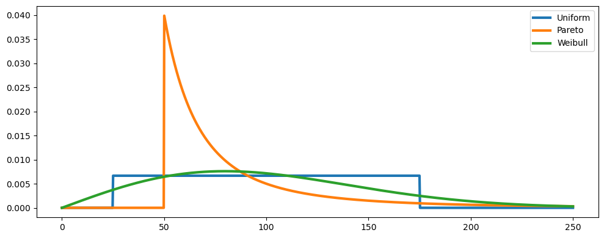
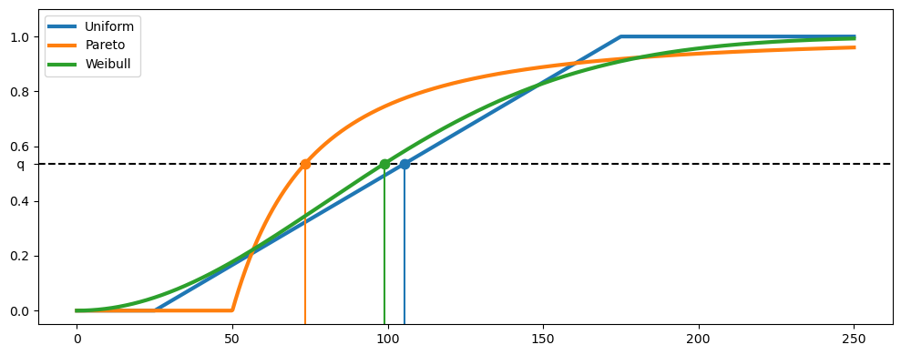
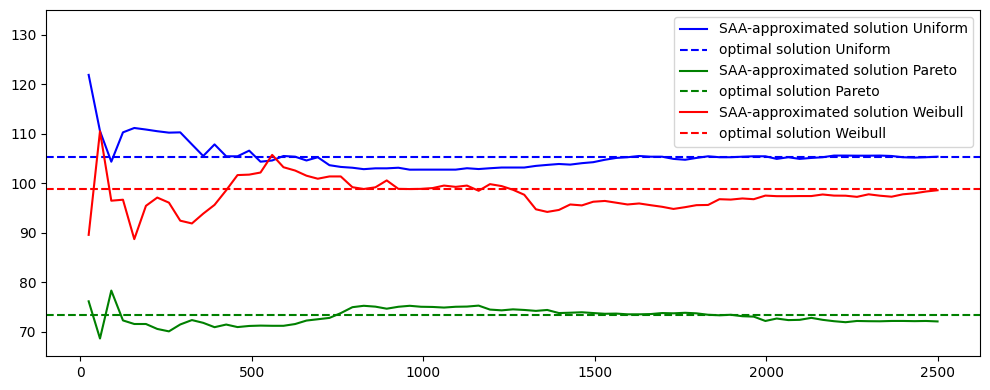

import numpy as np
import matplotlib.pyplot as plt
import scipy.stats as statsEx. S0b: Stock optimization for seafood distribution center
This problem is a modified version of this example
Problem description
Each day a seafood distribution center buys \(x\) tons of tuna at the unit cost \(c\) per ton. The next day a demand \(z\) is observed from the retailers to whom the fish is sold at a unit price \(p > c\). Any leftover tuna needs to be stored in a cold warehouse at a unit holding cost \(h\). The seafood distribution center cannot sell more fish than it has in stock, thus at most \(\min\{z, x \}\) tons will be sold which will leave \(h(x-z)^+\) tons leftover, where \((\cdot)^+\) is the positive residual (that is \(a^+:=\max\{0,a\}\)). Accounting for these costs, the net profit is \(p \min\{z, x \} - cx - h (x-z)^+.\)
Given a reasonable estimate of the probability distribution \(\mathbb P\) of the tuna demand \(z\), to maximize the long-term net profit then we can formulate the following optimization problem:
\[ \begin{align*} \max \quad & \mathbb{E} [ p \min\{z, x \} - cx - h (x-z)^+ ]\\ \text{s.t.} \quad & x \geq 0. \end{align*} \]
Since we have \(x \geq 0\) regardless of the demand \(z\), the feasible set for the decision variable \(x\) is not affected by unknown demand.
Explicit analytical solution
Assume further that the demand for tuna in tons can be modeled as a continuous random variable \(z\) with cumulative distribution function \(F(\cdot)\). We consider the following three distributions:
A uniform distribution on the interval \([25, 175]\);
A Pareto distribution on the interval \([50,+\infty)\) with \(x_m=50\) and exponent \(\alpha=2\). Recall that the inverse CDF for a Pareto distribution is given by* \(F^{-1}(\varepsilon) = \frac{x_m}{(1-\varepsilon)^{1/\alpha}}\);
A Weibull distribution on the interval \([0,+\infty)\) with shape parameter \(k=2\) and scale parameter \(\lambda=113\).
Note that all the three distributions above have the same expected value, that is \(\mathbb E z = 100\) tons.
The optimal solution of the seafood inventory problem using the closed-form formula that features the inverse CDFs/quantile functions \(F^{-1}\) of the considered distribution, that is
\[ x^* = F^{-1} \left( \frac{p-c}{p+h}\right). \]
In the example below, we report the numerical solution corresponding to the parameters \(c = 10\), \(p = 25\), and \(h = 3\), which determine the quantile of interest, that is \(q=\frac{p-c}{p+h} \approx 0.5357\).
# Setting parameters
c = 10
p = 25
h = 3
distributions = {
"Uniform": stats.uniform(loc=25, scale=150),
"Pareto": stats.pareto(scale=50, b=2),
"Weibull": stats.weibull_min(scale=112.838, c=2),
}
for name, distribution in distributions.items():
print(f"Mean of {name} distribution = {distribution.mean():0.2f}")
# show PDFs
x = np.linspace(0, 250, 1000)
fig, ax = plt.subplots(1, 1, figsize=(10, 4))
lines = []
for name, distribution in distributions.items():
ax.plot(x, distribution.pdf(x), lw=3, label=name)
ax.legend()
fig.tight_layout()
plt.show()
# quantile
q = (p - c) / (p + h)
# show CDFs and graphical solutions
extraticks = [q]
fig, ax = plt.subplots(1, 1, figsize=(10, 4))
ax.axhline(q, linestyle="--", color="k")
for name, distribution in distributions.items():
x_opt = distribution.ppf(q)
(line,) = ax.plot(x, distribution.cdf(x), lw=3, label=name)
c = line.get_color()
ax.plot([x_opt] * 2, [-0.05, q], color=c)
ax.plot(x_opt, q, ".", color=c, ms=15)
plt.yticks(list(plt.yticks()[0]) + [q], list(plt.yticks()[1]) + [" q "])
plt.ylim(-0.05, 1.1)
ax.legend()
fig.tight_layout()
print(f"The quantile of interest given the parameters is equal to q = {q:.4f}.\n")
for name, distribution in distributions.items():
x_opt = distribution.ppf(q)
print(f"The optimal solution for {name} distribution is: {x_opt:0.2f} tons")Mean of Uniform distribution = 100.00
Mean of Pareto distribution = 100.00
Mean of Weibull distribution = 100.00
The quantile of interest given the parameters is equal to q = 0.5357.
The optimal solution for Uniform distribution is: 105.36 tons
The optimal solution for Pareto distribution is: 73.38 tons
The optimal solution for Weibull distribution is: 98.84 tons
Deterministic solution for average demand
We now find the optimal solution of the deterministic linear problem model obtained by assuming the demand is constant and equal to the average demand, i.e., \(z = \bar{z} = \mathbb E z = 100\).
# problem data
c = 10
p = 25
h = 3
def SeafoodStockDeterministic():
model = pyo.ConcreteModel(
"Seafood distribution center - Deterministic average demand"
)
# key parameter for possible parametric study
model.mean_demand = pyo.Param(initialize=100, mutable=True)
# first stage variables and expressions
model.x = pyo.Var(domain=pyo.NonNegativeReals)
@model.Expression()
def first_stage_profit(m):
return -c * model.x
# second stage variables, constraints, and expressions
model.y = pyo.Var(domain=pyo.NonNegativeReals)
model.z = pyo.Var(domain=pyo.NonNegativeReals)
@model.Constraint()
def cant_sell_fish_i_dont_have(m):
return m.y <= m.mean_demand
@model.Constraint()
def fish_do_not_disappear(m):
return m.y + m.z == m.x
@model.Expression()
def second_stage_profit(m):
return p * m.y - h * m.z
# objective
@model.Objective(sense=pyo.maximize)
def total_profit(m):
return m.first_stage_profit + m.second_stage_profit
return model
model = SeafoodStockDeterministic()
result = SOLVER.solve(model)
assert result.solver.status == "ok"
assert result.solver.termination_condition == "optimal"
print(
f"Optimal solution for determistic demand equal to the average demand = {model.x():.1f} tons"
)
print(f"Optimal deterministic profit = {model.total_profit():.0f}€")Optimal solution for determistic demand equal to the average demand = 100.0 tons
Optimal deterministic profit = 1500€Profits resulting from using average demand
We now assess how well we perform by taking the average demand as input for each of the three demand distributions above.
For a fixed decision variable \(x=100\), approximate the expected net profit of the seafood distribution center for each of the three distributions above using the Sample Average Approximation method with \(N=2500\) points. More specifically, generate \(N=2500\) samples from the considered distribution and solve the extensive form of the stochastic linear problem resulting from those \(N=2500\) scenarios.
def NaiveSeafoodStockSAA(N, sample, distributiontype):
model = pyo.ConcreteModel(
"Seafood distribution center - Naive solution performance"
)
def indices_rule(model):
return range(N)
model.indices = pyo.Set(initialize=indices_rule)
model.xi = pyo.Param(model.indices, initialize=dict(enumerate(sample)))
# first stage variable: x (amount of fish bought)
model.x = 100.0
def first_stage_profit(model):
return -c * model.x
model.first_stage_profit = pyo.Expression(rule=first_stage_profit)
# second stage variables: y (sold) and z (unsold)
model.y = pyo.Var(model.indices, domain=pyo.NonNegativeReals)
model.z = pyo.Var(model.indices, domain=pyo.NonNegativeReals)
# second stage constraints
model.cantsoldthingsfishdonthave = pyo.ConstraintList()
model.fishdonotdisappear = pyo.ConstraintList()
for i in model.indices:
model.cantsoldthingsfishdonthave.add(expr=model.y[i] <= model.xi[i])
model.fishdonotdisappear.add(expr=model.y[i] + model.z[i] == model.x)
def second_stage_profit(model):
return sum([p * model.y[i] - h * model.z[i] for i in model.indices]) / float(N)
model.second_stage_profit = pyo.Expression(rule=second_stage_profit)
def total_profit(model):
return model.first_stage_profit + model.second_stage_profit
model.total_expected_profit = pyo.Objective(rule=total_profit, sense=pyo.maximize)
result = SOLVER.solve(model)
print(
f"- {distributiontype}-distributed demand: {model.total_expected_profit():.2f}€"
)
return model.total_expected_profit()
np.random.seed(0)
N = 7500
print(
f"Approximate expected optimal profit calculate with {N} samples when assuming the average demand with"
)
samples = np.random.uniform(low=25.0, high=175.0, size=N)
naiveprofit_uniform = NaiveSeafoodStockSAA(N, samples, "Uniform")
shape = 2
xm = 50
samples = (np.random.pareto(a=shape, size=N) + 1) * xm
naiveprofit_pareto = NaiveSeafoodStockSAA(N, samples, "Pareto")
shape = 2
scale = 113
samples = scale * np.random.weibull(a=shape, size=N)
naiveprofit_weibull = NaiveSeafoodStockSAA(N, samples, "Weibull")Approximate expected optimal profit calculate with 7500 samples when assuming the average demand with
- Uniform-distributed demand: 966.36€
- Pareto-distributed demand: 787.71€
- Weibull-distributed demand: 910.55€Approximating the solution using Sample Average Approximation method
We now approximate the optimal solution of stock optimization problem for each of the three distributions above using the Sample Average Approximation method. More specifically, generate \(N=5000\) samples from each of the three distributions and then solve the extensive form of the stochastic linear problem resulting from those \(N=5000\) scenarios. For each of the three distribution, we compare the optimal expected profit with that obtained before and calculate the value of the stochastic solution (VSS).
def SeafoodStockSAA(N, sample):
model = pyo.ConcreteModel("Seafood Stock using SAA method")
def indices_rule(model):
return range(N)
model.indices = pyo.Set(initialize=indices_rule)
model.xi = pyo.Param(model.indices, initialize=dict(enumerate(sample)))
# first stage variable: x (amount of fish bought)
model.x = pyo.Var(domain=pyo.NonNegativeReals)
def first_stage_profit(model):
return -c * model.x
model.first_stage_profit = pyo.Expression(rule=first_stage_profit)
# second stage variables: y (sold) and z (unsold)
model.y = pyo.Var(model.indices, domain=pyo.NonNegativeReals) # sold
model.z = pyo.Var(
model.indices, domain=pyo.NonNegativeReals
) # unsold to be returned
# second stage constraints
model.cantsoldfishidonthave = pyo.ConstraintList()
model.fishdonotdisappear = pyo.ConstraintList()
for i in model.indices:
model.cantsoldfishidonthave.add(expr=model.y[i] <= model.xi[i])
model.fishdonotdisappear.add(expr=model.y[i] + model.z[i] == model.x)
def second_stage_profit(model):
return sum([p * model.y[i] - h * model.z[i] for i in model.indices]) / float(N)
model.second_stage_profit = pyo.Expression(rule=second_stage_profit)
def total_profit(model):
return model.first_stage_profit + model.second_stage_profit
model.total_expected_profit = pyo.Objective(rule=total_profit, sense=pyo.maximize)
return model
def display_results(model, distributiontype):
smartprofit = model.total_expected_profit()
print(
f"Approximate solution in the case of {distributiontype} distribution using N={N:.0f} samples"
)
print(f"Approximate optimal solution: x = {model.x.value:.2f} tons")
print(f"Approximate expected optimal profit: {smartprofit:.2f}€")
if distributiontype == "uniform":
print(
f"Value of the stochastic solution: {smartprofit:.2f}-{naiveprofit_uniform:.2f} = {smartprofit-naiveprofit_uniform:.2f}€\n"
)
elif distributiontype == "Pareto":
print(
f"Value of the stochastic solution: {smartprofit:.2f}-{naiveprofit_pareto:.2f} = {smartprofit-naiveprofit_pareto:.2f}€\n"
)
elif distributiontype == "Weibull":
print(
f"Value of the stochastic solution: {smartprofit:.2f}-{naiveprofit_weibull:.2f} = {smartprofit-naiveprofit_weibull:.2f}€\n"
)
return None
np.random.seed(1)
N = 5000
samples = np.random.uniform(low=25.0, high=175.0, size=N)
model = SeafoodStockSAA(N, samples)
SOLVER.solve(model)
display_results(model, "uniform")
shape = 2
xm = 50
samples = (np.random.pareto(a=shape, size=N) + 1) * xm
model = SeafoodStockSAA(N, samples)
SOLVER.solve(model)
display_results(model, "Pareto")
shape = 2
scale = 113
samples = scale * np.random.weibull(a=shape, size=N)
model = SeafoodStockSAA(N, samples)
SOLVER.solve(model)
display_results(model, "Weibull")Approximate solution in the case of uniform distribution using N=5000 samples
Approximate optimal solution: x = 105.82 tons
Approximate expected optimal profit: 979.98€
Value of the stochastic solution: 979.98-966.36 = 13.63€
Approximate solution in the case of Pareto distribution using N=5000 samples
Approximate optimal solution: x = 73.33 tons
Approximate expected optimal profit: 890.72€
Value of the stochastic solution: 890.72-787.71 = 103.00€
Approximate solution in the case of Weibull distribution using N=5000 samples
Approximate optimal solution: x = 100.06 tons
Approximate expected optimal profit: 919.08€
Value of the stochastic solution: 919.08-910.55 = 8.54€
Convergence of the SAA method
The SAA method becomes more precise as the sample size \(N\) increases. To illustrate this, we solve the same optimization problem as before but using a different number of samples, with the sample size \(N\) increasing from \(25\) to \(2500\). As we can see, the approximate solutions converge to the theoretical ones as the sample size increases.
shape = 2
xm = 50
scale = 113
levels = 75
table = np.zeros((levels, 7))
for i, N in enumerate(np.linspace(25, 2500, levels, dtype=int)):
np.random.seed(0)
samples = np.random.uniform(low=25.0, high=175.0, size=N)
profit_uniform, xu = SeafoodStockSAA(N, samples, "uniform", False)
samples = (np.random.pareto(a=shape, size=N) + 1) * xm
profit_pareto, xp = SeafoodStockSAA(N, samples, "Pareto", False)
samples = scale * np.random.weibull(a=shape, size=N)
profit_weibull, xw = SeafoodStockSAA(N, samples, "Weibull", False)
table[i] = [N, xu, xp, xw, profit_uniform, profit_pareto, profit_weibull]
fig, ax = plt.subplots(1, 1, figsize=(10, 4))
ax.plot(table[:, 0], table[:, 1], "-b", label="SAA-approximated solution Uniform")
ax.axhline(y=105.36, color="b", linestyle="--", label="optimal solution Uniform")
ax.plot(table[:, 0], table[:, 2], "-g", label="SAA-approximated solution Pareto")
ax.axhline(y=73.38, color="g", linestyle="--", label="optimal solution Pareto")
ax.plot(table[:, 0], table[:, 3], "-r", label="SAA-approximated solution Weibull")
ax.axhline(y=98.84, color="r", linestyle="--", label="optimal solution Weibull")
ax.legend(loc="upper right")
plt.ylim(65, 135)
fig.tight_layout()